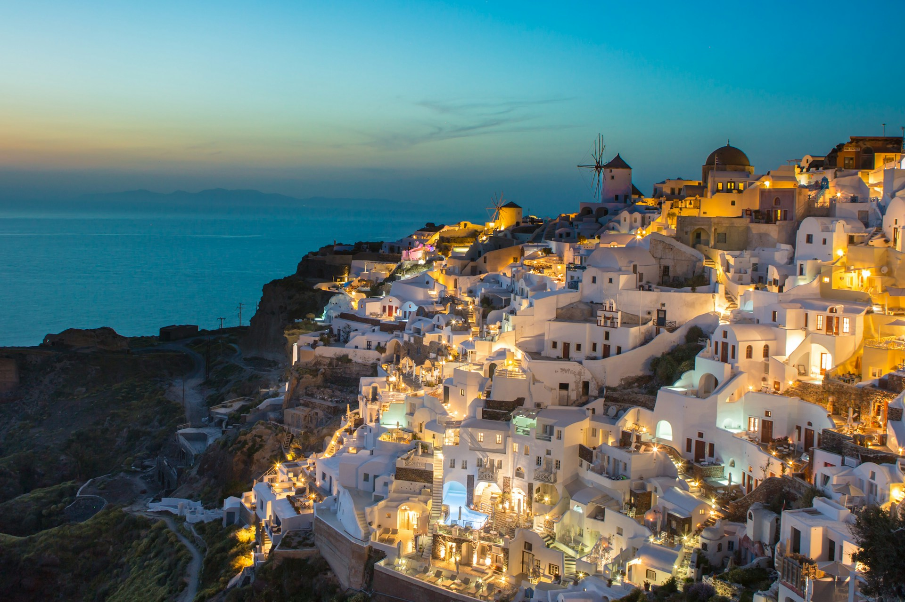
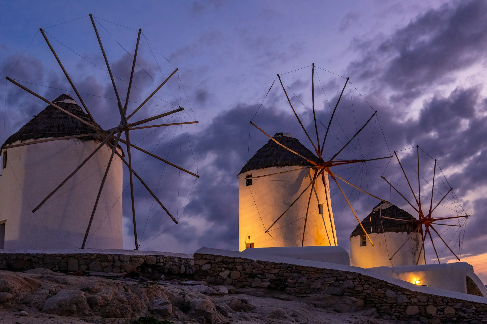
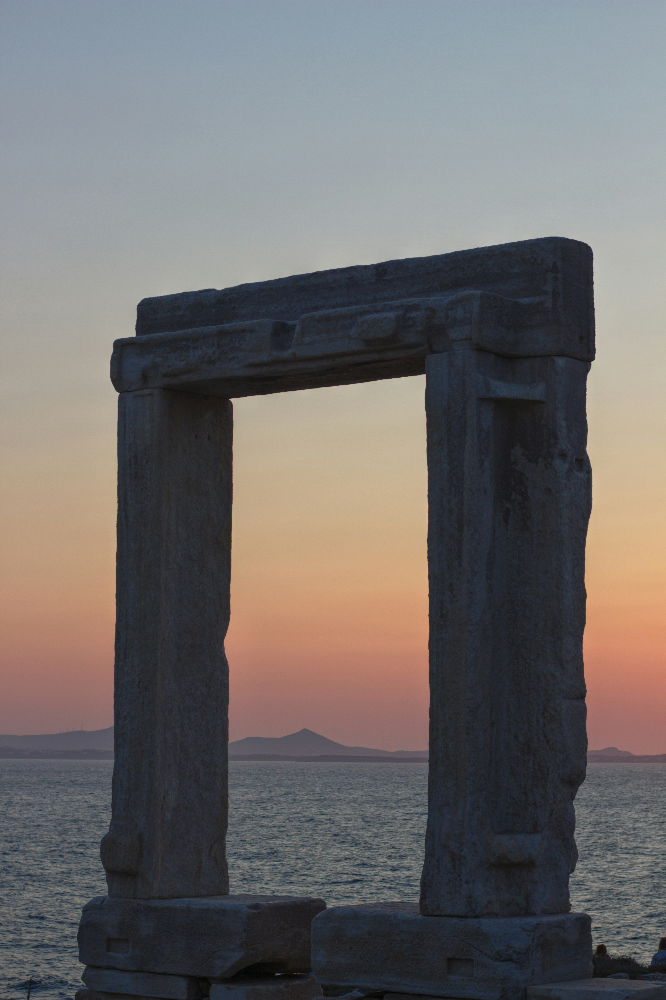
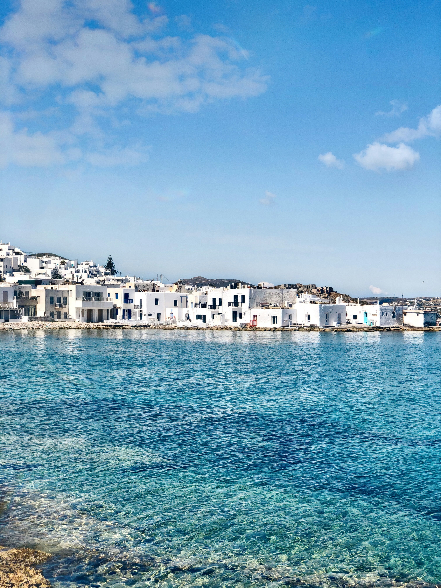
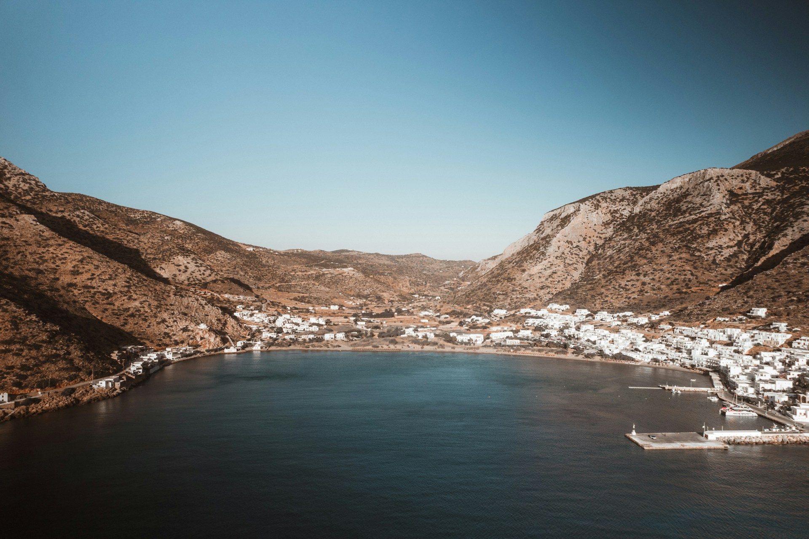
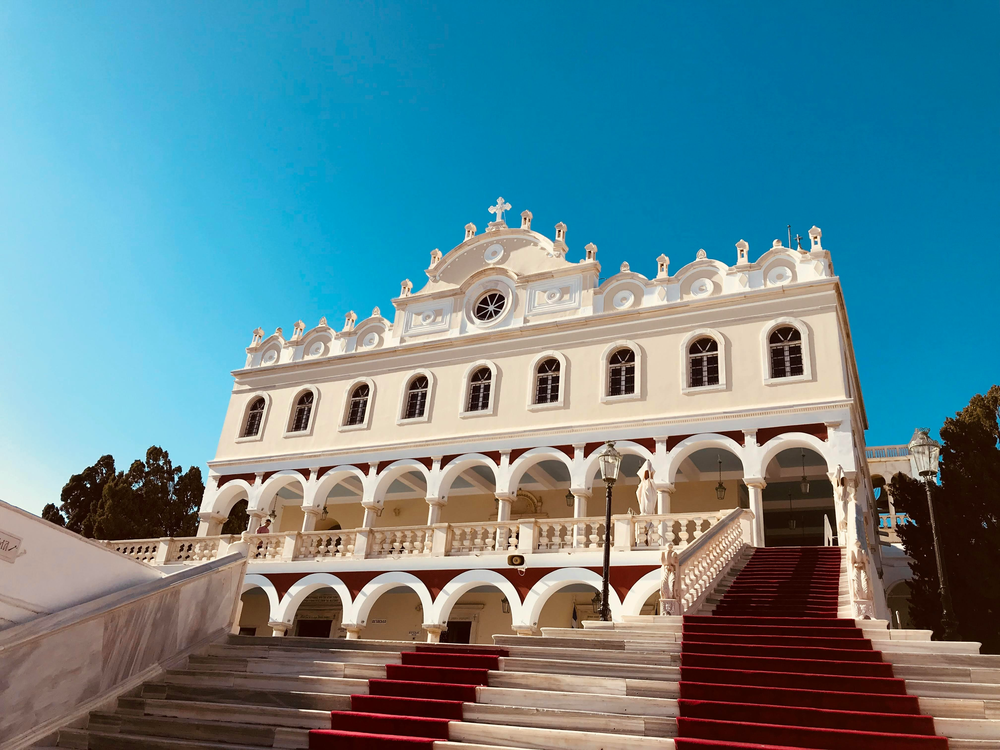
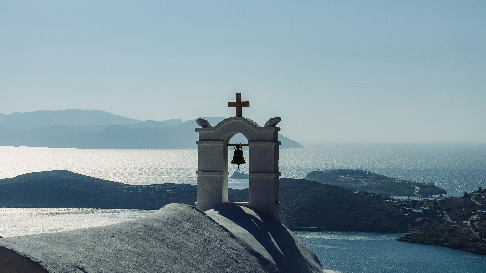

Kykladen · Ägäis
Die Kykladen
& ihre Schwestern

Kykladen · Ägäis
Santorin
Das berühmteste Bild Griechenlands: Weiß getünchte Häuser mit blauen Kuppeln hoch über der Caldera eines erloschenen Vulkans. Oia, Fira und schwarze Lavastränden warten auf Sie.
Romantik · Sonnenuntergänge → Mehr entdecken
Kykladen
Mykonos
Lebendiges Nachtleben, pittoreske Windmühlen und kristallklare Strände.
Lifestyle · Strände → Mehr entdecken
Kykladen
Náxos
Die größte Insel der Kykladen verbindet lange Strände, grüne Täler und antike Tempelreste am Meer.
Natur · Antike
Kykladen
Páros
Weiße Gassen, kleine Häfen und ein entspanntes Inselleben zwischen Wind und Licht.
Dörfer · Strände
Kykladen
Sífnos
Berühmt für Töpferkunst, gutes Essen und ruhige Buchten mit klarem Wasser.
Kulinarik · Ruhe
Kykladen
Mílos
Vulkanische Küsten, leuchtende Felsen und eine der spektakulärsten Buchten der Ägäis.
Geologie · Strände
Kykladen
Síros
Elegante Hauptstadt der Kykladen mit neoklassischer Architektur und lebendiger Hafenatmosphäre.
Architektur · Hafen
Kykladen
Tínos
Pilgerinsel mit Dörfern, Marmorkunst und stillen Landschaften abseits der großen Routen.
Pilger · Kunst
Kykladen
Amorgós
Klippen, das Kloster Hozoviotissa und tiefes Blau machen Amorgós zu einer der dramatischsten Inseln der Ägäis.
Kloster · Meer
Kykladen
Anafi
Abgelegen, ruhig und windgeformt liegt Anafi wie ein stiller Rand der Kykladen im Meer.
Ruhe · Weite
Kykladen
Andros
Grün, wasserreich und mit Wanderwegen durch Täler und Dörfer gehört Andros zu den vielseitigsten Kykladeninseln.
Wandern · Natur
Kykladen
Antíparos
Klein, entspannt und bekannt für Höhlen, Strände und ein gemütliches Sommerleben.
Höhlen · Strände
Kykladen
Donoússa
Kleine Insel für alle, die Stille, klares Wasser und echte Abgeschiedenheit suchen.
Abseits · Meer
Kykladen
Irakliá
Winzig und friedlich, mit Höhlen, Buchten und einem ganz langsamen Rhythmus.
Stille · Natur
Kykladen
Thirassiá
Die stille Schwester von Santorin mit Blick auf die Caldera und einem sehr ursprünglichen Charakter.
Caldera · Ursprünglich
Kykladen
Íos
Bekannt für Strände, Hügel mit Blick aufs Meer und ein lebendiges Sommerleben.
Strände · Nachtleben
Kykladen
Kea
Nah an Athen und dennoch ruhig, mit Wanderwegen, Dörfern und eleganter Gelassenheit.
Wandern · Nähe
Kykladen
Kimolos
Weiße Felsen, kleine Häfen und ein sehr ruhiges Inselleben südlich von Milos.
Ruhig · Küste
Kykladen
Koufonísia
Kleine Inselgruppe mit türkisfarbenem Wasser und fast karibischem Küstengefühl.
Lagunen · Inseln
Kykladen
Kýthnos
Heiße Quellen, Hügel und ruhige Buchten machen Kýthnos zum entspannten Zwischenziel.
Thermen · Buchten
Kykladen
Sérifos
Zerklüftete Hügel, kleine Häfen und eine rauere, ursprüngliche Kykladen-Seite.
Rau · Original
Kykladen
Sikinos
Klein, ruhig und fast unberührt mit alten Wegen und wenig Tourismus.
Still · Authentisch
Kykladen
Schinoússa
Sehr klein, sehr ruhig und mit einer entspannten Badebuchten-Atmosphäre.
Buchten · Ruhe
Kykladen
Folegandros
Steile Felsen, kleine Chora und ein sehr ruhiger, fotogener Inselcharakter.
Steil · Still